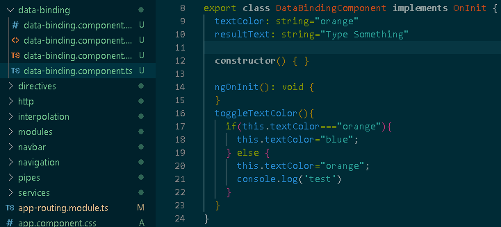
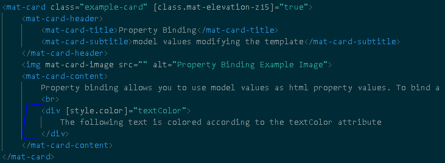
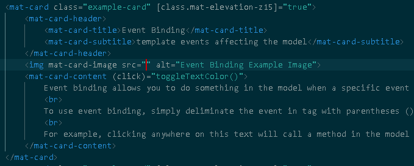
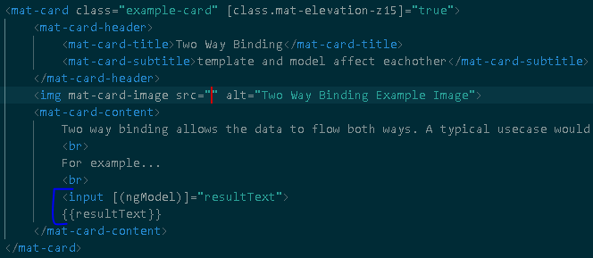

Data binding is the syntax used to communicate between the model and the template. Interpolation is a form of model to template data binding, but in this section we'll cover the other data binding syntaxes.
The following is the model used in the examples for this section:

Property Bindingmodel values modifying the template

Property binding allows you to use model values as html property values. To bind a property, simply surround it with the [] delimeter.
The following text is colored according to the textColor attribute
Event Bindingtemplate events affecting the model

Event binding allows you to do something in the model when a specific event occurs in the template (click, keyup, etc.).
To use event binding, simply deliminate the event in tag with parentheses ().
For example, clicking anywhere on this text will call a method in the model that changes the textColor attribute.
Two Way Bindingtemplate and model affect eachother

Two way binding allows the data to flow both ways. A typical usecase would be an input and a result on the same page. With two way binding, changing the input will update the result in real time.
For example...
{{resultText}}